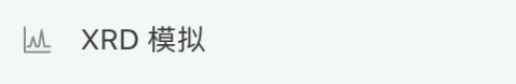

PREPARE YOUR DATA
文件与测量条件
根据目标准备输入文件，并记录真实测量条件。这一步决定后续参数能否正确解释实验数据。
| 功能 | 必要输入 |
|---|---|
| 物相识别 | 一份实验图谱；元素与化学式均为可选条件。 |
| 精修 + 识别 | 一份实验图谱；后续确认精修设置。 |
| 已知物相精修 | 一份实验图谱，以及每个待精修相的 CIF。 |
| PDF 卡计算 | 一份实验图谱，以及至少一份 CIF。 |
| XRD 模拟 | 一份或多份 CIF / MCIF，无需实验图谱。 |
| 晶体可视化 | 一份 CIF。 |
图谱格式
每个任务只提交一份实验图谱。仪器专用文件解析失败时，从仪器软件导出两列 CSV 或 XY；仅修改后缀不能转换文件。
两列文本通常为 2θ（度）和强度，每行对应一个采样点。保持角度与强度整行对应，并说明文件是否包含表头，以及是否经过扣背景、平滑或归一化处理。
测量条件
记录样品编号、辐射源或波长、横坐标单位、扫描范围及仪器参数文件（如有）。不要把软件默认值当成已知测量条件。
START YOUR FIRST TASK
创建任务与确认参数
- 点击“新建任务”，再选择左侧所需功能。
- 点击底部任务输入框的 “+”，选择具体文件并确认附件名正确。不要把测试数据总压缩包作为一份图谱上传。
- 在同一输入框填写分析目标、样品编号和已知条件。功能入口预填的文字可以补充；模型选择器不是物相检索模型或辐射设置。
- 点击右下角发送按钮。参数确认表单出现后，检查任务类型、单相或多相、检索方式、元素及化学式等可见字段。
- 以确认表单的最终选值为准。修改后提交表单；关闭或取消表单不会启动计算。
- 查看当前任务的执行消息。若仍停留在“计划待确认”，先完成表单提交，不必重复上传相同文件。
同一样品补充条件时继续原任务。更换样品或比较另一组设置时新建任务，名称包含样品编号和条件，以免把不同任务的截图与输出混用。
IDENTIFY A PHASE
单相识别与检索方式
根据一份实验图谱检索候选晶相，不执行结构精修。未知物相识别不要求提供 CIF；进行不带化学式的测试时，化学式字段留空。
| 选项 | 作用 |
|---|---|
| 单相 | 按单相假设检索；不能据此删除剩余实验峰。 |
| XMatcher | 根据图谱进行候选匹配；无元素约束时可使用该通道。 |
| XQueryer-LW | 使用用户提供的元素条件检索候选；需要有效元素约束。 |
| 同时选择两者 | 在单相表单中选中两种模型，并检查实际执行状态。 |
| 未知物相数目 | 先尝试单相，质量不满足要求时转入多相流程。 |
请对附件进行单相物相识别，不精修。 已知元素：Ca Fe Si O 不提供候选化学式。请在单相配置中使用 XMatcher 和 XQueryer-LW。 辐射条件：[实际条件]；预处理：[实际处理或无]。
完成检查
先检查检索通道是否成功，再查看候选排序和复核结论。Top 1 仅指当前排序第一的候选，不能自动当作已确认物相。没有候选列表时，不存在可选择的 Top 1。
RESOLVE A MIXTURE
多相识别与元素输入
多相指一份样品图谱包含多个晶相，不是同时上传多份图谱。选择“物相识别”并上传一份混合图谱，在确认表单中选择“多相”。相数未知时可选择“未知物相数目”。
多相表单提供以上两种通道，可保留默认的两种通道，或按测试要求只选一种。候选会汇总并接受复核。单相的 XQueryer-LW 与 XMatcher 选项不能代替多相表单设置。
元素与化学式分别填写
| 字段 | 填写方法 |
|---|---|
| 元素 | 填写已知元素符号并去重，例如 Ca Al Si O Ni S。未知元素不要猜测；部分已知时说明列表不完整。 |
| 化学式提示 | 没有化学式时留空。已知多相组成时，每个相单独写一个化学式，用英文逗号、英文分号或换行分隔。 |
| CIF | 有元素约束、无结构提示的识别测试只上传图谱，CIF 留作对照答案；已知结构精修时再上传。 |
请对附件进行多相物相识别，不精修，不提供候选化学式。 已知元素：Ca Al Si O Ni S 请使用多相配置中的 XMatcher-AutoMix 和 XDecomposer。 辐射条件：[实际条件]；相数：[未知或已知数量]。
FROM CANDIDATES TO FIT
精修与识别
先寻找物相，再检验候选结构对实验图谱的拟合。输入一份图谱和测量条件，已知元素用于识别阶段。识别结果与精修结果属于不同阶段，应分别检查。
- 点击“精修 + 识别”，上传图谱并说明单相、多相或相数未知。
- 提交首次识别确认表单，核对元素、化学式及识别通道。
- 识别阶段返回后，查看候选及其依据；出现精修确认表单时，核对使用的候选相或结构文件。
- 选择当前可用的精修引擎，填写仪器文件（如有）、精修范围、参数约束及轮数设置。不要仅因提高拟合程度就释放全部原子参数。
- 提交精修确认并保持任务会话。通信中断时先检查原任务状态，避免重复启动同一计算。
- 完成后核对计算与观测曲线、差值、拟合指标、结构文件及验证状态，并下载本任务文件。
先识别附件中的物相，再对有依据的候选进行精修。 样品：[编号]；元素：[已知元素或未知]；辐射：[实际条件]。 优先优化比例、背景和晶胞相关参数，固定原子占位率。 请提供全谱拟合、差值曲线、拟合指标及最终验证状态。
REFINE A KNOWN STRUCTURE
已知物相精修
用于已具备结构模型的样品：跳过物相检索，直接以提供的 CIF 进行精修。单相上传一个 CIF；多相上传每个相的 CIF，并同时提供一份完整实验图谱。
- 选择“已知物相精修”，通过“+”加入图谱和全部 CIF。
- 核对每个 CIF 的化学式、晶胞及原子信息，避免重复上传同一结构或遗漏某一相。
- 在精修表单中确认单相或多相、结构列表、引擎和仪器配置。提供 FullProf 仪器文件时使用对应的
IRF文件。
| 参数 | 作用与检查 |
|---|---|
| 比例因子 | 控制分相强度；不直接等于质量分数。 |
| 背景与峰形 | 拟合基线和峰轮廓；避免用背景掩盖漏相。 |
| 零点与晶胞 | 影响峰位；应考虑参数之间的相关性。 |
| 原子坐标与占位率 | 影响结构因子；仅在数据和化学依据支持时调整。 |
COMPARE REFLECTIONS
PDF 卡计算
输入一份实验图谱及一份或多份已知结构 CIF，计算理论反射并与实验峰对照。该功能不执行未知物相识别或 Rietveld 精修。
- 点击“PDF 卡计算”，上传图谱与各相 CIF。
- 检查确认表单中的文件名、波长及峰检测和匹配参数。
- 提交计算。完成后分别查看理论反射表与实验峰表，检查峰归属和未匹配峰。
- 调整相的可见性、颜色或标注时，保留物相名称及来源。手工改动峰归属后，使用报告中的导出控件保存当前版本。
| 参数 | 初始值 | 含义 |
|---|---|---|
| 波长 | 1.5406 Å | 理论峰位置的辐射条件；需与实验一致。 |
| 匹配容差 | 0.20° 2θ | 允许的实验峰与理论峰位置差。 |
| 强度阈值 | 10% | 筛选实验峰的相对强度门槛。 |
| 最小峰间距 | 0.08° 2θ | 相邻检测峰之间的最小间隔。 |
| 突出度 | 0% | 控制峰相对周围基线的突出程度。 |
初始值是软件默认设置，须按实际数据核对。下载 theory.csv、peaks.csv、observed.csv、parameters.json 或结果压缩包。初始文件记录自动归属，后续手工修改需另行导出。
FROM STRUCTURE TO PATTERN
XRD 模拟

从 CIF 或 MCIF 计算理论粉末衍射图谱，不需要实验图谱。可上传一个或多个结构文件，多文件模拟可比较各相分量及总图谱。
- 选择“XRD 模拟”，上传需要模拟的结构文件。多个文件分别对应不同相。
- 在确认表单中检查波长、2θ 范围、采样步长、峰形、峰宽及混合参数。
- 提交计算，检查每个文件的解析状态；部分文件失败时，只能将成功的相列入已完成范围。
- 在模拟面板中调整相可见性、颜色、相对显示比例与峰宽；选择总谱、叠加或堆叠视图，查看 HKL 峰表。
- 保存当前视图时使用面板 CSV 或 SVG 导出。改变波长、扫描范围或步长，需要重新确认并计算。
| 设置 | 初始值 | 用途 |
|---|---|---|
| 波长 | 1.5406 Å | Cu Kα₁ 理论峰计算 |
| 2θ 范围 | 10–90° | 模拟区间 |
| 采样步长 | 0.02° | 连续曲线的角度间隔 |
| 峰形 | pseudo-Voigt | 峰轮廓函数 |
| 半高宽 | 0.18° | 初始峰展宽 |
| Lorentzian 比例 η | 0.5 | 峰形混合参数 |
初始下载文件包括 peaks.csv、pattern.csv、parameters.json 及压缩包，记录确认时的设置。
LOOK INSIDE THE STRUCTURE
晶体可视化
- 点击左侧“晶体可视化”，进入结构查看页面。
- 通过 CIF 文件选择控件选择一个
.cif文件；页面提供拖放区域时也可拖入。 - 等待结构解析，核对当前文件名和结构信息。换样品时重新加载对应 CIF，避免把上一份模型误认为当前模型。
- 使用页面提供的视图操作观察原子排列；需要计算衍射图谱时返回“XRD 模拟”。
从 CIF 查看元素
用文本编辑器打开 CIF，搜索 _chemical_formula_structural、_chemical_formula_sum 或 _atom_site_type_symbol。化学式中的元素符号表示元素种类，数字表示计量关系。晶胞展开式中的数字可能大于最简结构式，但元素种类相同。
| 结构式示例 | 对应元素 |
|---|---|
| Ca₃Al₂(SiO₄)₃ | Ca Al Si O |
| NiS | Ni S |
| 上述两个相的元素并集 | Ca Al Si O Ni S |
解析失败时
确认文件已解压且确为 CIF，检查晶胞参数和原子位点信息是否完整。CSV 图谱或图片不能通过修改扩展名变成结构文件。
KEEP A TRACEABLE RECORD
状态判断与任务保存
先判断执行状态
| 状态或提示 | 解释与下一步 |
|---|---|
| 计划待确认 | 尚未进入计算；完成当前参数表单并提交。 |
| 进行中或待分析 | 不能视为最终结论；检查任务执行消息和最新进度。 |
| 已复核 0，且未复核大于 0 | 候选已生成但尚无复核结论；任务结束后仍如此时，保留记录并排查复核流程。 |
| XMatcher 调用失败 | 检索通道执行异常；查看详细错误，不能记录为样品不存在匹配物相。 |
| 未找到可靠物相匹配 | 当前没有可发布的可靠结论；结合通道状态、复核情况和输入条件判断原因。 |
invalid formula_hint | 核对化学式及分隔符；无化学式的任务应清空该字段。 |
incomplete chunked read | 响应传输中途断开；核对原任务是否仍在运行，再决定恢复或重试。 |
保存与复查
从“最近”返回任务，核对样品编号、附件、参数和时间。保存原始输入、确认设置、输出文件及错误记录。使用结果附件中的下载入口；截图只记录可见内容，不能代替完整 CSV 或结果包。
RESULT INTERPRETATION
结果判读顺序与结论等级
软件结果用于组织证据，不能以单一分数、覆盖率或低残差直接确定物相。结论必须同时满足数据条件、峰位、强度趋势、化学合理性和复核状态。
- 确认输入。核对波长、2θ 范围、背景、元素约束和样品信息。
- 查看候选。先看物相名称、化学式、空间群和数据库编号，再看排序分数。
- 检查谱图。观察主要峰位是否对应，重点检查未解释峰和系统性强度偏差。
- 执行复核。查看 Inspector、峰位检查和覆盖率；“通过”仍表示需要人工核实。
- 检查精修。比较实验与计算曲线、差值曲线、拟合指标和参数变化是否合理。
- 形成结论。仅把证据一致的结果写入报告，保留任务、输入、CIF 和导出文件。
RESULT INTERPRETATION
多相识别结果解读
点击候选组合可同步查看各相的理论峰和结构。下面保留说明书中的四组候选，百分比表示相对衍射贡献。
| 候选组合 | 物相 / 相对衍射贡献 | 分数 | 已解释强度 |
|---|---|---|---|
| 1 | C2Li4O6 51.1% + ClNa 19.5% + C2LiO5 29.4% | 63.15 | 58.1% |
| 2 | C2Li4O6 52.1% + ClNa 39.2% + ClLi4O4 8.8% | 54.68 | 53.5% |
| 3 | C2Li4O6 62.1% + ClNa 37.9% | 55.71 | 51.4% |
| 4 | C2Li4O6 51.8% + ClNa 39.2% + Cl6Na6 9.0% | 53.84 | 54.2% |

- C2Li4O6 等价于 2 × Li2CO3 的化学式表示，ClNa 表示 NaCl，组合 3 与已知两相组成相符。
- 该组合分数为 55.71，已解释强度为 51.4%，但复核未通过，因此只能记录为候选。
- 组合 1、2、4 增加第三相，可能是对剩余峰的过度拆分。确认新增相前，应检查其独有峰是否连续存在，并核对化学来源。
RESULT INTERPRETATION
单相候选与 Inspector 复核
| 候选 / 化学式与编号 | 复核结果 | 覆盖率 | 检索通道 |
|---|---|---|---|
| 1 · Pb3S2O12 / mp-1220658 | 61.31 · 复核通过，仍需核实 | 0.939 | XMatcher + XQueryer-LW |
| 2 · BaPb2S3O12 / mp-1228326 | 33.17 · 峰位检查未通过 | 0.756 | XMatcher |
| 3 · Pb4SSi3Zn2O15 / mp-559184 | 31.88 · 未通过复核 | 0.938 | XMatcher |

- 候选 1 排名最高并通过软件复核，可进入人工确认；峰位整体接近，但理论强度与实验强度存在差异。“通过”不等于已确定物相。
- 候选 2 的峰位检查未通过，应降低优先级。候选 3 虽有 0.938 的覆盖率，但未通过复核，不能仅凭覆盖率接受。
- 最终确认应核对样品可能元素、辐射源或波长、独有峰、数据库编号、空间群和下载的 CIF 结构。
点击候选只会切换预览中的理论峰与晶体结构，不会改变排名或科学结论。
RESULT INTERPRETATION
XRD 模拟与 PDF 卡结果解读


| 设置 | 本例数值 |
|---|---|
| 物相 | Li2CO3.cif 与 NaCl.cif |
| 辐射与范围 | λ = 1.5406 Å；10–90° 2θ |
| 峰形 | Pseudo-Voigt；FWHM 0.18°；η = 0.50 |
| PDF 卡匹配容差 | ±0.2° |
- 强度系数只改变显示贡献，独立或全局峰宽控制峰形展宽，两者都不能直接给出物相含量。
- 模拟谱用于验证峰位、HKL 和相间重叠，不替代实验数据的物相鉴定。
- 蓝色 P1 对应 Li2CO3，暗红色 P2 对应 NaCl。峰位匹配支持候选相存在，但显示曲线已归一化，强度差异不能直接换算含量。
- 择优取向、晶粒尺寸或应变、背景及仪器条件都会改变强度。定量评价应结合精修。
RESULT INTERPRETATION
PyXplore 精修结果解读

| 参数 | 精修前 | 精修后 | 变化 |
|---|---|---|---|
| a = b = c | 9.410000 Å | 9.410690 Å | +0.000690 Å (+0.0073%) |
| V | 833.237621 ų | 833.420929 ų | +0.183308 ų (+0.0220%) |
- 初始结构为用户提供的 Mn2O3.cif（80 个原子）。晶格和体积变化均小于 0.03%，说明晶胞调整幅度很小。
- 实验与计算主峰总体重合，差值曲线大部分围绕零线。个别强峰仍有局部残差，应检查峰形、背景和择优取向。
- 微小晶胞变化不能证明精修已被接受。必须同时记录 Rwp、Rp、χ²，并确认参数无异常相关或超出物理范围。
RESULT INTERPRETATION
GSAS-II 精修与结果验收

差值在若干强峰位置出现尖锐残差，仍需复核模型、峰形、背景或择优取向。
| 相 / 参数 | 精修前 | 精修后 | 解释 |
|---|---|---|---|
| 相 1：V | 237.053556 ų | 237.027549 ų | 空间群设置不同，不计算差值 |
| 相 2：a = b = c | 5.620000 Å | 5.620648 Å | +0.0115% |
| 相 2：V | 177.504328 ų | 177.565760 ų | +0.0346% |
验收检查表
- 空间群、晶胞设置和相的 CIF 身份一致；“—”不能解释为零变化。
- 主峰峰位和强度趋势一致，差值曲线无连续结构或强峰残差。
- Rwp、Rp、χ² 与同类数据和同一精修策略可比，不能以单一低 Rwp 判定成功。
- 晶格、峰形、背景、择优取向和原子参数均在物理合理范围。
- 定量分析时相含量总和接近 100%，并报告不确定度、约束和未建模相。
ACCOUNT & MODEL SETUP
软件介绍与标准工作流程
干将用于组织 XRD 数据处理、物相检索、候选复核、PDF 卡匹配、理论谱模拟和结构精修。软件输出辅助形成材料分析证据链，最终结论仍需结合样品来源与人工复核。
| 核心功能 | 内容 |
|---|---|
| 物相识别 | 单相或多相候选、元素或化学式约束、候选排序与 Inspector 复核。 |
| 谱图与卡片 | 实验谱、理论峰、HKL、PDF 卡匹配及未解释峰检查。 |
| 结构与精修 | CIF 查看、XRD 模拟、PyXplore / GSAS-II 精修和晶胞参数比较。 |
| 任务与输出 | 任务状态、记录回查及 CSV / SVG / PNG / CIF 等结果导出。 |
标准工作流程
- 准备 XRD / CIF。
- 创建任务。
- 检查候选。
- 执行复核。
- 必要时精修。
- 导出与归档。
ACCOUNT & MODEL SETUP
账户充值与额度检查
确认当前登录账号正确，并明确充值金额、支付方式和开票需求。余额、套餐、价格和支付渠道以软件当时显示为准。
- 进入账户页面。点击主界面的账号或头像入口，打开账户、额度或充值页面。
- 选择充值项目。选择可用套餐或金额，核对币种、有效期、可用范围和退款规则。
- 确认订单。核对账号、项目、金额和支付渠道后提交，不要在聊天或截图中暴露支付信息。
- 完成支付。按页面提示完成支付，等待订单状态变为成功，不要重复提交未确认的订单。
- 刷新额度。返回账户页面刷新余额或额度；如未到账，先查询订单记录和支付状态。
- 保存凭证。按单位要求保存订单号、支付凭证和发票信息。
ACCOUNT & MODEL SETUP
LLM 配置：准备与添加模型
| 信息 | 取得位置与填写原则 |
|---|---|
| 模型名称（Model ID） | 从模型服务控制台取得，必须是实际请求使用的准确标识。 |
| API Key | 具有模型调用权限的有效密钥。密钥、模型和地址须属于同一套服务。 |
| Base URL | 服务方提供的 API 基础地址。不要填写控制台网页，也不要追加完整聊天接口路径。 |
打开配置页面
- 点击主界面左下角齿轮形“设置”。
- 在左侧选择“大模型”。
- 在右侧“自定义模型”区域点击“添加模型”。
ACCOUNT & MODEL SETUP
LLM 配置：字段填写说明
| 界面字段 | 填写内容 | 检查要点 |
|---|---|---|
| 配置名称 * | 便于辨认的显示名称 | 与 Model ID 分开，避免自定义配置同名。 |
| 模型名称 * | 服务方准确 Model ID | 不要填自定义昵称或截图占位示例。 |
| 供应商 | 自动识别或下拉选择 | 代理或网关需核对实际协议与支持项。 |
| API Key * | 有效模型密钥 | 复制完整，无空格换行，不得写入名称。 |
| Base URL * | API 基础地址 | 协议、域名、路径与密钥服务一致。 |
| 上下文窗口 | 模型可处理的 token 容量 | 填大不会扩展能力，token 不等于中文字数。 |
| 最大输出 Tokens | 单次回复输出预算 | 不超过服务上限，与上下文窗口不同。 |
| Temperature | 采样随机性 | 首次可保留 0.7，以服务支持范围为准。 |
必填项示意
| 字段 | 填写示意 |
|---|---|
| 配置名称 | 团队模型-日常 |
| 模型名称 | [准确 Model ID] |
| API Key | [有效密钥] |
| Base URL | [API 基础地址] |
ACCOUNT & MODEL SETUP
LLM 配置：保存、选择与验证
- 保存配置。点击弹窗右下角“保存”，在“已保存模型”确认配置名称出现；未更新时点击刷新。
- 返回聊天。关闭设置窗口，点击输入框右下方、发送按钮附近的当前模型名称。
- 选择模型。在“自定义”分组选择新配置；同名时注意与“系统”分组区分。
- 确认切换。确认输入框下方显示目标配置名称，再发送请求。
- 发起验证。新建普通聊天，输入“请只回复：配置成功”，观察是否正常返回。
示例配置（不可直接调用）
| 字段 | 仅供展示的值 |
|---|---|
| 配置名称 | 教程示例-日常助手（仅展示） |
| Model ID | demo-chat-model |
| API Key | DEMO_ONLY_NOT_A_REAL_KEY |
| Base URL | https://api.example.com/v1 |
若页面提示“流程自动选模型”，首次验证应改用允许手动选模的普通聊天任务。
ACCOUNT & MODEL SETUP
LLM 配置：修改、切换与删除
| 操作 | 操作方法 |
|---|---|
| 修改配置 | 进入“设置 → 大模型”，打开目标卡片的“配置”，修改后保存。若正在使用，先切换到其他模型。 |
| 日常切换 | 在聊天输入框下方打开模型选择器，从“系统”或“自定义”选择，以显示名称和勾选状态确认。 |
| 删除配置 | 先切换到另一个模型，再进入目标配置弹窗，点击“删除配置”并确认。 |
| 系统模型 | 由登录后的服务发现提供，通常不允许用户编辑；独立连接参数应使用自定义配置。 |
能力验证边界
- 基础文本验证通过后，再分别验证工具调用、图片理解或其他所需能力。
- 普通文本返回成功不能证明所有高级能力均受支持。
- 修改高级参数前保留原值，出现参数错误时先移除非必需字段。
TROUBLESHOOTING
常见问题与故障排查
| 现象 | 先检查 | 处理方法 |
|---|---|---|
| 必填项未填写 | 配置名称、Model ID、Key、URL | 补齐带 * 字段后保存。 |
| 聊天仍显示旧模型 | 是否在选择器选中新配置 | 选择“自定义”目标；自动选模流程改用普通聊天验证。 |
| 鉴权失败或无权限 | 密钥、服务地址、权限与额度 | 在服务控制台核对，不要以保存成功判断密钥有效。 |
| 模型不存在或路由错误 | Model ID 大小写、路径、供应商 | 对照服务标识，网关需核对协议与供应商。 |
| 参数不支持 | 输出、Temperature、思考力度、请求体 | 移除非必需高级字段，改用服务支持参数。 |
| 长度超限 | 会话长度和实际模型限制 | 新建短会话，降低输出预算并按真实限制设置。 |
| 网络失败或无结果 | Base URL、连通性、服务状态 | 用短请求重试，保留脱敏报错交给维护者。 |
| 无法编辑或删除 | 是否正在使用或为系统模型 | 先切换其他模型，系统模型按系统方式使用。 |
| 连接中断 | 网络或服务中途断开 | 核对任务是否仍运行，稍后恢复或重试，避免重复创建任务。 |
TROUBLESHOOTING
登录后提示模型未配置或暂不可用
方法一：使用账号提供的系统模型
- 检查登录状态。显示“去登录”时先完成登录，已登录时确认网络正常。
- 出现“重新发现”时点击重试。仍无法获取时退出账号并重新登录；若无法连接后端服务，重启应用后再试。
- 返回普通聊天，点击输入框下方的模型名称，在“模型选择 → 系统”中选择可用模型。
- 发送一条简短消息，正常收到回复后即可继续使用。
方法二：配置自己的模型服务（可选）
- 进入“设置 → 大模型”，点击“添加模型”。
- 填写配置名称、模型名称、API Key 和 Base URL，其余参数按服务方要求填写并保存。
- 返回聊天，在“模型选择 → 自定义”中选择该配置并发送消息验证。

TROUBLESHOOTING
首次启动时需要安装环境依赖
这是正常的环境准备流程。应用会检查运行所需依赖，并在缺失时启动安装。
- 查看环境准备页面的安装状态，确认正在处理的依赖并等待完成；出现终端窗口时按提示操作。
- 仅在系统要求授权时输入电脑管理员密码，不是干将账号密码。终端输入时可能不显示字符，输入完成后按回车。
- 返回应用，进入“设置 → 环境变量”，点击“重新检测”。
- 确认必选依赖均已识别，可选依赖根据实际功能需求安装。
安装失败时
- 在首次准备页面展开“查看详细输出”，记录具体失败原因。
- 进入“设置 → 环境变量”，对缺失且支持安装的依赖点击“安装”重试。
- 若提示未找到终端，复制界面提供的命令并在系统终端中执行，完成后再次点击“重新检测”。
TROUBLESHOOTING
下载安装包时被浏览器或系统拦截
- 使用项目方提供的下载入口，选择与当前操作系统及处理器架构一致的安装包。
- 打开浏览器下载面板，查看文件旁的完整提示。
| 提示或现象 | 处理方法 |
|---|---|
| 网络中断或文件不完整 | 检查网络并重新下载完整安装包。 |
| 文件不常见或提示风险 | 先联系项目支持人员核实来源及版本，再按浏览器提示处理。 |
| 被组织策略禁止 | 联系设备或网络管理员处理。 |
| 下载完成但系统阻止打开 | 记录系统提示并联系项目支持人员确认处理方式。 |

TROUBLESHOOTING
登录时收不到验证码
- 确认邮箱或手机号填写正确，再点击验证码旁的“获取”。
- 区分发送失败与未收到：若提示发送失败，检查网络并记录报错；若提示发送成功，检查邮箱、短信、垃圾邮件或拦截记录。
- 发送成功后，“获取”按钮显示 60 秒倒计时，期间无需重复点击。
- 关闭并重新打开干将，重新输入账号后再次获取验证码。

TROUBLESHOOTING
以上步骤未解决：联系项目支持人员
请一次性提供以下信息，以便技术人员复现并定位问题。
| 信息类别 | 需要提供 |
|---|---|
| 基本信息 | 应用版本、操作系统、设备型号及问题发生时间。 |
| 问题过程 | 所在页面、执行的操作、出现的提示，以及已经尝试过的处理步骤。 |
| 模型问题 | 提示截图、模型显示名称和复现步骤。 |
| 环境问题 | 依赖名称、检测结果和错误输出。 |
| 下载问题 | 浏览器名称、安装包文件名和拦截截图。 |
| 验证码问题 | 发送时间以及发送成功或失败的提示。 |
READY FOR YOUR NEXT DISCOVERY
把方法，带回你的研究
准备好图谱，开始下一次有据可循的分析。
返回顶部